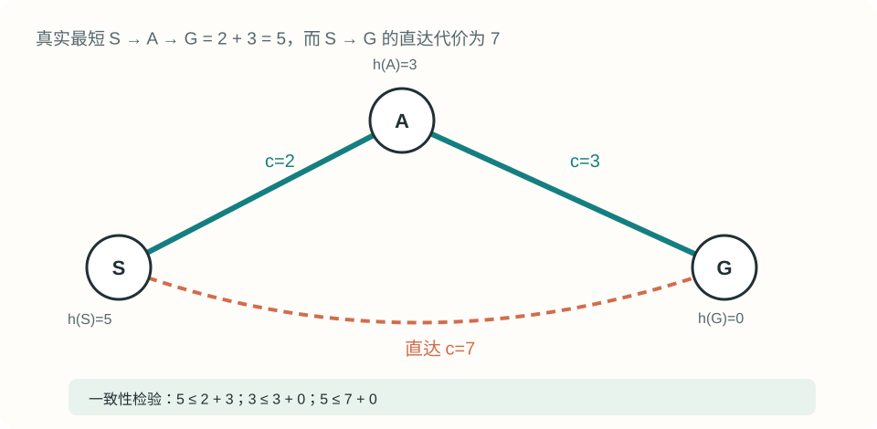

启发式搜索：距离与最优性的边界
启发函数不仅是“朝目标前进”的提示。它必须与动作和边代价相容，才能使搜索既高效又保有可验证的最优性。
为什么只看终点方向不够
在障碍物密集的仓库中，离终点最近的格子可能位于一条死胡同里。如果每次只选择“看起来离目标最近”的节点，搜索会反复朝墙靠近；如果完全不知道目标方向，搜索又会像水波一样向四周扩张。
启发函数 h(n) 用来估计从当前状态 n 到目标的剩余代价。它不是障碍检测器，也不自动保证搜索加速。真正需要思考的是：它与机器人可移动的边及其代价之间，具有什么数学关系？
贪心最佳优先搜索与 A* 的选择
贪心最佳优先搜索（Greedy Best-First Search）只根据 h(n) 排序；A* 使用已经走过的代价 g(n) 与估计的剩余代价 h(n) 之和 f(n) 作为排序键：
HEURISTIC SEARCH · 05
例如 P 的 h=1、g=6，而 Q 的 h=3、g=2。贪心会先扩展 P（h 小），A* 会先扩展 Q（f=5 小于 7）。A* 因此同时权衡“已经付出多少”和“剩下可能还要付出多少”。但要把这一策略升级成最优路径的保证，还需满足启发式与搜索实现的条件。
距离函数必须匹配运动模型
设目标相对当前位置的行列差分别是 Δx、Δy（按格计算），且每走一格的基础代价为 1。不同的邻接规则有不同的无障碍最短代价，因此也有不同的自然启发式。
| 允许动作 | 合适的下界 | 例：Δx=4, Δy=3 |
|---|---|---|
| 4 邻域，轴向成本 1 | 曼哈顿 |Δx|+|Δy| | 7 |
| 任意方向连续平移，按距离计价 | 欧氏距离 √(Δx²+Δy²) | 5 |
| 8 邻域，轴向 1、对角 √2 | Octile: max(dx,dy)+(√2−1)min(dx,dy) | 4+3(√2−1) ≈ 5.243 |
| 8 邻域，所有一步成本 1 | 切比雪夫 max(dx,dy) | 4 |
HEURISTIC SEARCH · 05
对四邻域、单位边代价，欧氏距离仍是可纳且一致的，并不是错误的启发式；它通常没有曼哈顿距离“信息量大”，因为欧氏估计更低。不要把算法实际效率归因于没有测量的固定“加速倍数”。如果网格每格是 r 米且边权按米计价，这些距离都需要乘以 r。
可纳性与一致性：最优性的边界
设 h*(n) 表示从 n 到目标的真实最小剩余代价。可纳性（admissibility）要求 h 不高估 h*；若所有边代价非负，通常也取 h(n)≥0 和 h(G)=0。
一致性（consistency）进一步要求沿每一条合法边 (u,v)，剩余估计最多下降一条边的真实代价。这等价于启发式满足与边代价相容的三角不等式。
一致启发式必然可纳（假定目标估值为零，并可沿一条通向目标的最优路径反复应用不等式）。反过来，可纳不必一致。对于常见非负边权图搜索，使用一致 h 时，A* 首次从优先队列弹出目标即可确定最优解，且已确定最优 g 的节点无需重开。若 h 只是可纳但可能不一致，则实现一般需要允许更优路径重开节点，不能简单永久冻结 visited 集合。
证明范围：这里讨论有有限代价最优路径、非负权重、明确终点且按最小 f 展开的经典 A* 图搜索。无限图、负权边、近似求解或不可靠的碰撞检测，需要单独检查。
在一张三节点图上验证条件
考虑 S→A 代价 2，A→G 代价 3，S→G 代价 7。真实最优代价 h*(S)=5、h*(A)=3、h*(G)=0。取 h(S)=5、h(A)=3、h(G)=0，恰好在 S→A 和 A→G 两条边上满足一致性等号。
HEURISTIC SEARCH · 05

这不是“画出来接近目标”的直觉，而是逐边检查的正式约束。工程上，如果启发式被人为乘以大于 1 的权重，可能得到 Weighted A* 之类的近似搜索，但不能继续宣称它在经典可纳条件下保证最优。
用 A* 运行并断言最优路径成本
下面的程序针对非负单位边代价、四邻域、不允许斜向的网格。优先队列使用 (f,g,node)，当发现更低 g 时重新入队，并跳过过期条目。这种做法可以正确处理重复入队，避免简单的 visited 锁死更优路径。
from heapq import heappush, heappop
def h(a, b): # 仅对四邻域、单位边代价成立的紧下界
return abs(a[0]-b[0]) + abs(a[1]-b[1])
def astar(grid, start, goal):
rows, cols = len(grid), len(grid[0])
assert grid[start[0]][start[1]] == 0
assert grid[goal[0]][goal[1]] == 0
best = {start: 0}
parent = {start: None}
pq = [(h(start, goal), 0, start)]
while pq:
f, g, u = heappop(pq)
if g != best.get(u): # 丢弃过期优先队列条目
continue
if u == goal:
path = []
while u is not None:
path.append(u)
u = parent[u]
return path[::-1], g
r, c = u
for dr, dc in ((-1,0),(0,1),(1,0),(0,-1)):
v = (r+dr, c+dc)
vr, vc = v
if not (0 <= vr < rows and 0 <= vc < cols):
continue
if grid[vr][vc] != 0:
continue
tentative = g + 1
if tentative < best.get(v, float("inf")):
best[v] = tentative
parent[v] = u
heappush(pq, (tentative+h(v,goal), tentative, v))
return None
grid = [[0,0,0,0], [0,1,1,0], [0,0,0,0]]
result = astar(grid, (0,0), (2,3))
assert result is not None
path, cost = result
assert path[0] == (0,0) and path[-1] == (2,3)
assert cost == 5 == len(path)-1
print(path, cost)运行环境 Python 3.10+，标准库足够。该样例的最短路线需要 5 步，因为起终点曼哈顿距离是 5 且存在一条可行的 5 步路线；断言检查了路径端点、长度和成本一致性。真实系统还需处理地图安全余量、动态障碍、连续碰撞和性能基准测试。
最容易误以为正确的四件事
- “更接近目标”不意味着“总成本更低”：贪心搜索可能绕很远。
- “启发式低估了”不意味着“可以永远关闭节点”：不一致时要允许更优 g 的重新传播。
- “欧氏距离不是曼哈顿”不意味着在四邻域中错误：它仍是合法下界，只是可能较弱。
- “A* 一定比 Dijkstra 快”是过度概括：h=0 时 A* 退化为一致代价搜索；效率受到启发式质量、障碍、数据结构与平局规则影响。
最终应同时报告：相同地图、邻接规则、边代价、起终点和硬件条件下的扩展节点数、运行时间、路径成本和是否达到最优，而不是使用不可复现的单一“快几倍”。